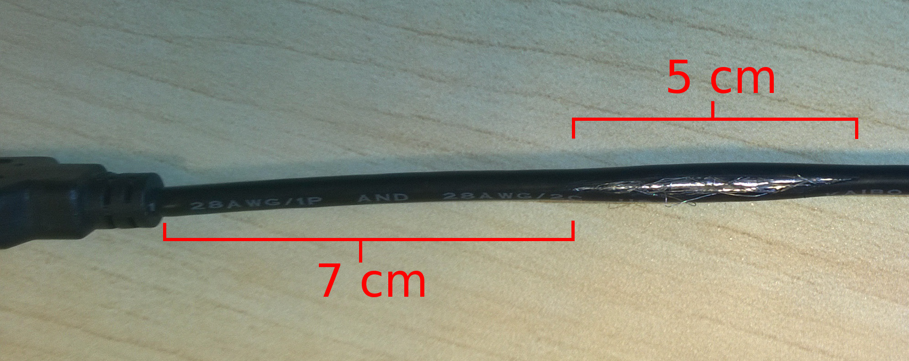

Figure 1: MinnowBoard MAX wiring diagram
The absolutely mandatory steps to take for a simplest working system with just MinnowBoard MAX platform are as follows:
Note: At the time of writing, the location is temporary and doesn’t include pre-made Debian images due to their size.
In this document there are multiple references to a testing automation USB-stick. This stick is intended to contain programs and other tools required for maintaining a complete testing automation system.
Note: At the time of writing, the location is temporary and doesn’t include pre-made Debian images due to their size.
The content can be downloaded from ta-usb-stick branch in the AFT git repository and copied to any suitably large USB-stick.
The content was bundled together during the creation of this document, in December 2015. Therefore the programs may be out of date.
In the testing automation system SSH-keys are used extensively for authentication. A default SSH-key is included in the testing automation USB-key in folders gigabyte and minnowboard. Additionally, the SSH-key is added to the root.ssh folder in each pre-made Debian image. It is highly recommended that these SSH-keys are replaced with your own ones! Leaving the default keys in place may expose your system to attacks.
This document was originally written over November and December 2015 to relay information regarding testing automation setup in an embedded Linux project. The level of detail is intentionally high to allow the next operator to understand all details of the system.
This document covers the configuration and construction instructions only for the testing automation part of the continuous integration system used in the project. The testing automation subsystem is not coupled to the build infrastructure other than by the image transmission.
In the first section the configuration and installation of the testing harness, the testing server, is covered. In the second and third sections the usage of the most important pieces of software are detailed. In section 5 the different kinds of power cutter devices are explained and their associated software is explained. In sections 6-9 the individual testing platforms are described. Finally, in the appendices, the AFT implementation details and privilege reduction options are explained.
The testing server is, in this document, called testing harness. The testing harness is responsible of fetching the images from the source and executing AFT to flash the images on various target devices. The system has been tested using OpenSUSE 13.2.
The testing harness acts to the testable devices as a network file system server, and as a DHCP-server. It is highly recommended that the devices are put in an isolated network.
Testable images can be copied from the builders using many means. Both NFS and standard IP transmission using wget have been tested and found reliable. Because the images are most likely copied over Ethernet, and the testable devices are in a separate network, the testing harness must have two network cards.
In the following section the configuration is detailed. The commands are expected to be run using root privileges. A fresh installation of OpenSUSE 13.2 with SSH-server, no desktop environment and working internet connectivity are assumed. Firewall configuration is not provided, it is recommended that the testing harness is only kept in a trusted network.
Configuration of AFT is explained in appendix A.
A set of common tools and utilities:
OpenSUSE comes with YaST configuration utility. It can be used to configure most base OS options. Using yast configure:
The secondary local area network is used for the flashing of PC-devices 3.1. The tester’s home will be set as shared folder over NFS for the 192.168.30.0/24 network. The tester is also the recommended user for automated testing.
Enable wheel group as passwordless sudoers. Using visudo add to the end of the /etc/sudoers file:
Flashing Edison requires the installation of dfu-util program. Dfu-util takes care of the DFU-protocol and the flashing of each partition on the target device.
At the time of writing (24.11.2015) the official latest version of DFU-util does not have a working USB-tree support. Fortunately a patch has been made, and the installation is therefore straightforward.
Clewarecontrol utility is used to control the power cutters made by Cleware GmbH. At the time of writing, the latest clewarecontrol, version 4.1, was broken. Therefore the version 2.8 is recommended.
To install clewarecontrol commandline utility:
Usage instructions are given in the section 5.
Dnsmasq is used as a DHCP-server for the PC-devices. It also provides a table with MAC-to-IP-address conversion. Dnsmasq is configured to provide IP-addresses to the 192.168.30.0/24 subnet, to all devices connected (through a switch) to the secondary Ethernet port.
Add the following lines to /etc/dnsmasq.conf file:
Note: replace the p1p1 with the network interface the PC-devices are connected to.
To enable dnsmasq service:
If at some point the DHCP-exchange has to be debugged, stop the Systemd-service and start dnsmasq manually using:
Network file system (NFS) is used to share the images and other files used in flashing for PC-devices. By convention the whole /home/tester is shared.
To share the folder, add the following line to /etc/exports:
Then enable the Systemd-service:
On some platforms, also rpcbind.service has to be activated.
It is recommended to set udev-rules to create symbolic links from a human-readable file name to ttyUSB-devices used for PEM (section 4), serial output recording (appendix A) and to the USB-relay powercutters used for Edisons. The USB-to-serial adapters are often unreliable and tend to occasionally reset, which causes a re-initialization by Linux kernel. This also triggers a (re-)creation of the ttyUSB-device created by udev.
The recommended way to set the rules is by adding rules to, for example,
/etc/udev/rules.d/99-persistent-ttyusb. A rule can look for example like:
The SUBSYSTEM is the udev subsystem which is used by the target device, the SYMLINK is the name of the symbolic link created under /dev, and the ID_PATH is used to filter the specific device. To retrieve the ID_PATH, plug in the device, find the correct ttyUSBX device using e.g. dmesg and execute:
After setting the rules, udev must be refreshed using
Note: Setting the rules using this method allows unplugging and re-plugging USB-cables to the same port, or rebooting the testing harness without re-configuring AFT. Otherwise the ttyUSB-device may change!
AFT is a Python tool to flash the testable image to various kinds of devices. AFT tries to guarantee that the device under test is in a state where:
To achieve the first requirement, AFT flashes the image to the primary boot media of the device under test, and possibly modifies the BIOS settings to use that as the boot media.
The second requirement is achieved by injecting a known public SSH-key to <root home>/.ssh/authorized_keys. This allows the owner of the corresponding private key to connect the device without a password. AFT may also modify the network settings of the testing harness to make sure the device is still accessible after a reboot.
Finally AFT starts the pre-configured tests by executing either its internal test cases or by starting a subprocess. The test cases are assumed not to modify the BIOS settings. For this AFT has an integrated test runner which executes test plans based on configuration.
Because flashing often requires multiple boots during the process, and the only guaranteed way to power off a device is to cut its power, different kinds of external power cutters are used.
The execution syntax for AFT is
where, at the time of writing, the options for machinetype are gigabyte, galileov2, minnowboardmax and edison. The imagefile is the image to be tested.
Optionally, AFT can also record the serial console output to file by using --record argument, assuming the serial device has been configured properly. This allows some level of logging even if the device fails to boot.
Details to the configuration of AFT is given in the appendix A. In the same appendix there is a a general overview to the classes involved and implementation details.
PC-like devices are devices which have a network interface with a fixed MAC-address and usually have a some sort of BIOS/EFI menu.
PC-like devices are flashed with the aid of a support image, a Linux image which can boot the device under test. The support image is used to copy the target image over NFS to the primary boot media, and to add e.g. the SSH-key to it.
The BIOS settings are modified using PEM, an Arduino UNO device with a keyboard emulating firmware. See section 4 for further information.
The biggest hurdle with PC-devices is usually the creation of a support image. The distribution used on this guide is Debian 8.2 because it supports out of the box a wide range of architectures and is generally known to be compatible with many kinds of devices. In simple cases the support image creation is just a matter of installing the operating system to a USB stick. In worse cases, e.g. with Galileo Gen 2, it requires the creation of custom kernel with board specific Board Support Package (BSP).
Support images for all currently supported devices are provided on the testing automation USB-stick.
By using a support image to also modify the target image, AFT can be run without root privileges. Mount-command for modifying images and mount points always requires root privileges, but this is executed only on the support image. Unfortunately gadget-devices require the modification of the image on the testing harness, so this is not viable in the general case.
PC-devices usually use some kind of a power supply which is connected to the mains powerlines. Therefore a natural place for a power cutter is in between the mains and the PSU.
Another option would be to strip the positive line between the PSU and the device, and install a power cutter in between. This is considered a worse solution because it requires more customization of the hardware.
The PC-devices described in this document include Gigabyte 6, MinnowBoard MAX 7 and Galileo Gen 2 8.
A support image is provided on the Testing automation USB-stick for each platform in the folder debian-images. These can be copied to another USB-stick using e.g.
where the sdX refers to the block device you want to copy the image to.
Gadget-like devices are devices which are closer to a mobile phone or a traditional embedded MCU or SoC. These are often flashed using the DFU-protocol.
There are several DFU programmer utilities and flashing a device completely may require separate flashing calls to flash each memory media on the device. Depending on the flashing utility, it may be possible to detect errors during flashing. These shouldn’t cause a failure in testing but instead just initiate another attempt at flashing.
Depending on the device, switching power on and off can be considerably more difficult with a gadget-device. If the testable device has an internal battery, it most likely requires somewhat complicated custom hardware to power cycle it. With gadget-devices extra care must be taken in the prevention of floating ground issues. If the device is powered over USB, a powered USB-hub is almost certainly required.
The only gadget-device in this document is the Intel Edison 9, which uses dfu-util (2) for flashing and a USB-relay as a power cutter.
Note: The instructions work only on Arduino UNO!
Peripheral Emulator is a device created out of an Arduino UNO and USB-to-serial adapter for emulating a keyboard or another peripheral device. To be compatible with the PC 97 standard, and especially BIOS mode, the firmware supports 6-key-rollover.
PEM works by flashing both the Atmega 328U and Atmega 16U2 chips on the Arduino UNO R3 board.
The Atmega 328U is flashed with a firmware that takes care of the communication between the testing harness and the USB-to-serial adapter. The firmware receives keyboard states from the testing harness over serial data line and responds with an acknowledgement after each successful packet.
The Atmega 16U2 is converted from its original USB-to-serial mode to an actual 6KRO HID-emulator. The 16U2 receives the packets from the 328U, interprets them and sends them over the USB-interface using HID protocol.
PEM can be installed by issuing the following commands:
Note: PEM installation files are also included in the Testing automation USB-stick in the installationfiles folder.
The creation of a PEM-Arduino requires
The programs required are the Arduino IDE 1.6: (https://www.arduino.cc/en/Main/Software) and dfu-programmer 0.62: (https://dfu-_programmer.github.io/).
This script first erases the 16U2, then flashes the firmware and then resets the chip.
PEM has a graphical user interface for recording keyboard sequences. To make the keyboard sequence as reliable as possible, it is good idea to use constant intervals between the key presses. Additionally, most BIOS menus support e.g. PageUp and PageDown keys which move the cursor to the top or the bottom of the list (that is, to a known, fixed location).
When using the peripheral emulator, connect the USB-to-serial to your testing harness or recording computer using the mini/microUSB connector. Connect the USB-to-serial pins to corresponding Arduino pins: TX => 10, RX => 11 and GND => GND.
When PEM is started, it doesn’t start sending the key presses before the target device can detect them. This is achieved by waiting for the Arduino to boot up. Arduino is powered by the USB-B line, and therefore gets the power when the target device boots. Because the device under test power is controlled using a mains power cutter, in production, the PEM starts sending the key presses only exactly when the device boots.
To start the recording interface, use
Note: replace the /dev/ttyUSBX with the ttyUSB-device corresponding to the USB-to-serial adapter, which can be found using e.g. dmesg.
In the recording interface, to start recording a sequence, press the Start button. After that, each key press sent to the PEM UI gets sent to the target device. To stop recording and to save the last recording to the file given in the command line arguments, press the Stop button.
To clean up the keyboard sequence, a LibreOffice Calc spreadsheet is provided on the testing automation USB-stick at <USB-root>/arduinokb/sequence-editor.ods.
To execute a keyboard sequence, use the following command
Controlling the power on the target devices is always done using a power cutter in the power line. Power cutters are used because powering off cleanly is not reliable. In some PC-devices, the USB-ports also remain powered unless the power is completely cut off.
In our setup we have used two kinds of power cutters: for PC-devices, power switches by Cleware GmbH are used. Cleware cutters are controlled over USB using a command line tool clewarecontrol. At the time of writing, the latest version of clewarecontrol, 4.1, is unstable at least on Linux Fedora 22. It is recommended to use the version 2.8.
The cutters can be listed by issuing
A switch can be turned on and off using the following command
where device ID is the ID of the cutter device, X is the index of power socket in the cutter (zero-based), and the last number is 1 for switching the socket on, and 0 for switching it off.
The Edison is controlled using a USB-relay in the +5V line on the USB-cable. The relay is controlled using a Python script shipped with the AFT. The script sends binary data over serial to switch the relay on and off.
The USB-relays can be ordered from e.g. eBay. In some cases the switches are incorrectly recognized by the testing harness. The serial controller identifies itself as something else but a USB-to-serial adapter. The cause is probably incorrect internal firmware.
This can be fixed by adding a custom USB device ID to the correct USB-to-serial driver. The driver depends on the USB-to-serial chip used in the relay, common ones being cp210x and ftdi_sio. Adding a new device can be done in a root terminal by using for example
The device ID can be found with the help of e.g. lsusb. If the driver is not loaded, it can be loaded manually using modprobe.
Gigabyte is an IoT-gateway platform. It has a Gigabit ethernet, two USB 2.0 ports and one USB 3.0 port, HDMI- and VGA-outputs and internal WLAN and Bluetooth cards. It comes with 2 GB of ram and Intel Atom E3825 - the same one as in MinnowBoard MAX. It also has a 500 GB internal hard drive, which is the boot device used for testing.
The BIOS of Gigabyte has basic settings for boot option priorities and overriding the boot priorities. It also has options to restart the device on AC power loss, which has to be set as the booting is executed using a powercutter. Gigabyte supports Secure boot, but also has options for disabling it and to let users add their own keys. To enter the BIOS press delete-key during boot.
Note: the BIOS only supports one boot media with legacy boot (MBR), which must be set as the Boot Option #1 in Boot => Hard Drive BBS Priorities.
Note: the USB 3.0 port in the front of the device doesn’t work as a boot device if used with a USB 3.0 stick.
Note: Gigabyte BIOS is notoriously buggy. It sometimes creates invisible options to the boot override menu which replace a valid option but don’t work. To fix this, reflash the BIOS.
Note: At the time of writing, Gigabyte requires a screen attached to the HDMI port in order to boot in MBR mode. A screen in the VGA port does not work.
Gigabyte supports only 12V DC input and requires a 2.5 A powersupply. The DC-plug has a positive center.
Gigabyte is a PC-like device, similar to Galileo Gen 2 and MinnowBoard MAX. A Debian support image is created on a USB-stick. It is recommended that the support image is created with a legacy (non-EFI) bootloader. The BIOS settings are controlled with PEM-Arduino. The internal hard drive is used for the target image.
The internal ethernet adapter is used for networking.
The PEM keyboard sequence should select the support image from Save & Exit => Boot Override menu. The image boot options should (automatically) be the top options in the boot option priorities so the keyboard sequence for testing should be empty.
These instructions are for creating a bootable Debian USB-stick for Gigabyte with MBR and persistent storage.
Chipset => Restore AC Power Loss to Power On.
See the comments on the test automation USB-stick gigabyte/installgigabyte script for details of the post installation configuration.
MinnowBoard MAX is an open development board with a 64-bit Intel Atom E3825 CPU (the same as in Gigabyte) and 2 GB ram. It provides one microSD slot, a SATA2 connector, one of each USB 2.0 and USB 3.0 sockets, gigabit ethernet and a 6-pin serial output. It also has a microHDMI connector for monitors.
MinnowBoard MAX uses EFI for hardware initialization. The BIOS menu can be entered by pressing F2 during boot. The boot priorities can be overridden in the Boot Manager menu, and the priorities can be adjusted in Boot Maintenance Manager.
MinnowBoard MAX is a PC-like device, similar to Gigabyte and Galileo Gen 2. A Debian support image is created on a USB-stick. For MinnowBoard MAX Debian, an EFI-enabled bootloader is used but it has to be slightly modified for more convenient and stable test automation. The instructions for this are at the end of section 7.3.
The internal ethernet adapter is used for network connectivity.
After the bootloader modification, the PEM keyboard sequence can be used to select EFI USB Device as the boot device in the Boot Manager menu. The boot partitions of the image under test should be set as the primary boot options in the Boot Maintenance Manager so that an empty keyboard sequence can be used to boot it.
The 6-pin serial output can be used for boot console recording at 115200 bauds.
The microSD-card is used for the target image with MinnowBoard MAX.
MinnowBoard MAX supports both 32- and 64-bit firmwares. The official firmware site is https://firmware.intel.com/projects/minnowboard-_max but the firmware version 0.83 has been added to the testing automation USB-stick with both 32- and 64-bit flashing utilities. The following instructions explain how to flash the firmware using the testing automation USB-stick.
Because MinnowBoard MAX has only two USB-ports, and one of them is required for a keyboard, a microSD-card must be used for installation media. The BIOS doesn’t support USB hubs but they can be used after the OS is booted.
Select X to match the SD-card device on your machine with the help of e.g. lsblk.
See the comments on the test automation USB-stick minnowboard/installminnow script for details of the post installation configuration.
Galileo Gen 2 is a Quark development board with 256 MB of ram. It has integrated 100 ethernet connectivity, a microSD slot, a USB 2.0-port and a 6-pin serial connection socket. Underneath the board there is a full-size Mini PCIE card slot. Therefore if a half-size Mini PCIE card (e.g. Intel Wireless N 7260) is used in testing, a half- to full-size adapter has to be used.
Galileo Gen 2 supports input voltage between 7V and 15V. The included power supply is 12V, 1.25A. The DC-plug has a positive center.
The BIOS menu of Galileo Gen 2 is very limited. It only provides an option to select a boot-device by pressing F7 during boot time. The relevant options from CI-perspective are the microSD-card, represented as "Misc device" in the boot menu, and the USB-stick, represented with the make and model of the stick in the boot menu. Other options include e.g. EFI-shell and the yocto-image flashed to the internal storage.
The primary boot option is the "first misc or USB-device", which is not specified further. The first boot option depends on the order in which the microSD-card and the USB-stick have been inserted. If the test cases include a test which reboots the device, the testable image has to be put in the primary boot option, and the support image has to be on the secondary boot device.
In CI-system Galileo Gen 2 is a "PC-like" device, and therefore similar to Gigabyte and MinnowBoard MAX. To integrate Galileo Gen 2 in automated testing, the USB-socket has to be extended using a USB-hub, to connect both a PEM-Arduino and a USB-stick with bootable support image. The microSD-card is used for the target image.
The integrated ethernet adapter is used for network connectivity.
The 6-pin serial output can be used for boot console recording at 115200 bauds.
The PEM keyboard sequence to boot the support image should be the selection of secondary boot device, while the sequence to boot the testable image should be empty.
The following instructions are based on the preliminary work by Igor Stoppa in creating a bootable SD-card Debian image with persistent storage for the first generation Galileo. Several modifications and additions had to be made to his instructions but the basic idea has remained the same. The main difficulty is finding a Linux distribution which is bootable with an i586 device, as almost all "32-bit" distributions are using at least i686 architecture. Additionally, the kernel configuration required for Galileo Gen 2 had to be searched experimentally, to get all the features required for AFT-integration. The end result is an image which can be booted from both an SD-card or a USB-stick.
The high-level workflow is as follows:
The instructions have been tested on 18.11.2015 using a Fedora 22 host machine, 32-bit Debian 8.2 and VirtualBox 5.0.10.
In the following subsections the instructions are described in more detailed manner.
It is recommended to enable also bidirectional shared clipboard and drag’n’drop support.
When prompted about the version of kernel config, it is recommended to use the package maintainer’s.
Note: At the time of writing the latest version (v. 1.20) had a non-existing base commit ID. Therefore an older version (eg. 1.10) must be used.
git clone https://git.kernel.org/pub/scm/linux/kernel/git/stable/linux-stable.git
The .deb package should appear on one folder above your working directory.
Note: : The terminal interface (ttyS1) depends on the BSP version. This has been tested for 1.10 but an earlier version may use ttyQRK1.
Note: : The root password in support images so far has been rootme
Note: It is a good idea to add multiple network interfaces (eth1, eth2, ...) if you want to use the same stick in multiple devices.
Note: You may have to modify the vmlinuz-3.8.7+ and initrd.img-3.8.7 to correspond your kernel and initrd files.
Note: If you want to boot the image from a SD-card, modify the root=/dev/sda3 option to point to the SD-card: root=/dev/mmcblk0p3.
Note: modify the X to correspond your USB-stick device which can be found using eg. lsblk.
Intel Edison is a development platform intended for wearable devices. It is a SoC with two Intel Atom cores and one Intel Quark core, GB of internal RAM and integrated Bluetooth and Wi-Fi. The Atoms are normal x64 cores while the Quark is roughly an i586 processor.
Edison can be mounted on an Arduino development kit which provides Arduino UNO compatible pin layout. The development board also has a USB-serial interface, a mechanical switch to select between a micro-USB device controller and a normal USB socket, a DC plug and a microSD socket.
Edison uses a hacked U-Boot for hardware initialization.
From flashing perspective, Edison is closer to a mobile phone or similar "gadget" device than a complete PC. The OS image is written using DFU.
When an Edison is plugged to a computer, it is first detected as an Intel Merrifield device (8086:e005), which is used to recover the DFU-utility in the firmware. After a few seconds the device disconnects and reconnects as DFU-device, Intel USB download gadget (8087:0a99). At this stage the OS can be flashed. If DFU-communication is not initialized in a couple of seconds, the device disconnects again and finally boots normally.
After the boot process, the device is detected with multiple interfaces with ID 8087:0a9e. It can be used as a USB-storage, USB-serial device (at /dev/ttyACMX ) and as a USB-network interface.
The USB-network interface is used for network connectivity. This interface has to be configured on both the image under test and the testing harness. Network configuration is handled by AFT 3.
The USB-network interface of the Edison gets a random MAC-address every time the image is flashed. This also causes the network interface on the testing harness being recreated and renamed.
If there are multiple Edisons attached to the testing harness, the only way to differentiate between them is the USB-tree or USB-paths. Using the paths, each physical USB-port can be differentiated from each other.
Integrating Edisons to the testing automation requires a way to power off and on the device programmatically.
The best solution would be to find USB-hubs that supports Linux kernel’s USB power options at /sys/bus/usb/devices/usb1/power/ on per-port accuracy. Unfortunately this kind of USB-hubs are extremely difficult to find.
An implemented alternative is to use a power cutter on USB-cable’s +5V line. Because the device is powered by USB, the power cutter also shuts down the device. This requires exposing the +5V cable, stripping it, and attaching the newly open ends to a USB-controlled relay, as instructed in figure 5.
The USB-serial interface can be used for boot console recording at 115200 bauds.

1. Expose the wire shielding by cutting a 5 cm slice through the jacket, about 7 cm from the USB-A plug.
2. Strip the shielding carefully. Expose the red wire (+5V) and cut it in half.
3. Strip the wire, solder small beads of tin on the tips. Cover the cut with electrical tape.
4. Final setup.
In this appendix, configuration options are detailed. Also, a high level description of most important AFT implementation decisions are explained.
All AFT configuration is done with configuration files stored in /etc/aft.
Configuration files for the testable devices are stored in the subfolder devices. The configuration of a single physical device is combined out of these files.
In the test_plan folder is the configuration for each AFT test-plan.
The platform.cfg is the highest level configuration file. It is intended to store settings which are shared between all high-level device-types, ie. PC-devices or gadget-devices.
This is also the place where settings for automatic construction of the device topology can be stored. For example the leases_file_name refers to the location of the leases file used by dnsmasq. This file can be used to detect devices attached to the local network in which the PC-devices are kept in.
The catalog.cfg is the configuration file describing each device type. These are the options shared by all devices of the same type.
Each section in catalog.cfg must include at least the platform, cutter_type and test_plan options.
The platform option is used to load the correct high-level device configuration from the platform.cfg file.
The cutter_type is used to determine the type of cutter used for the devices. At the time of writing the options are clewarecutter and usbrelay.
The test_plan option is the name of the name of the test plan configuration file under test_plan folder.
For PC-devices, the additional options are as follows:
For Edison devices there are no extra device specific options.
For serial recording, the add option:
The topology.cfg file contains individual physical device specific information. The options you have to specify here depend on the device type and the power cutter used with it.
The mandatory options for all devices are the model and id. The information required to construct a cutter instance specific to the device is also almost certainly required.
The model is the device model. This is used to determine which device type from catalog.cfg is associated with the physical device.
The id is a unique identifier which is used as the name of the lock file associated with the device, when the device is in use. For PC-devices this should be the MAC-address. For Edisons this can be anything that is unique.
The options related to Clewarecutters are as follows:
For usbrelays the only required option is cutter. This specifies the ttyUSB device associated with the cutter.
For PC-devices the mandatory options are as follows:
For Edisons the mandatory options are as follows:
For serial recording the mandatory additional options are:
The aft.cfg is the global configuration file used to specify settings that affect the behaviour of AFT itself.
The lock_file option is the directory into which lock files can be created by users in lock group. For example on OpenSUSE this is /var/lock, while on Fedora it is /var/lock/lockdev.
The serial_log_name is the filename to which serial output is recorded under the AFT working directory.
The aft_log_name is the filename to which internal AFT log messages are stored.
The nfs_folder is the folder which is exported using NFS, and visible to the devices under test.
The test_plan folder contains configuration for each test plan. In a configuration file each section define one AFT test case with the parameter test_case and the settings for that test. The test_case is associated with the correct test class by the testcasefactory.
AFT is aimed to be as easy to deploy as reasonably possible. Because it is also intended to be flexible and suitable for other projects, the code is also kept as simple and short as possible.
The installation module. This file is responsible of deploying all AFT-related items, creating entry points and deploying example configuration files if they don’t exist already.
Device is an abstract base class to define an interface for all device types. It requires the implementation of write_image and get_ip methods. The write_image should execute all the steps required for flashing the image. The get_ip should return an IP-address that is guaranteed to work for SSH-connection on the device instance.
In addition, the test method should set the device and host to be ready to execute the testing, and then return test_case.run(self). This is the visited method in a visitor pattern.
The record_serial method is in the device class because the serial port used for recording is device-specific.
Cutter is an abstract base class to define an interface for all power cutters. It requires the implementation of connect and disconnect methods, to power on and off a power cutter.
Factory modules to construct devices and testcases. These are the only locations where there should be string-to-Python-class conversion.
This is preferred over a perhaps more elegant setuptools entrypoint method for the addition of modules to AFT to keep the codebase simpler. The entrypoint methodology requires somewhat complicated installation method in the extension modules.
TestCase is an abstract base class to define an interface for all AFT test cases. These can for example call an external testrunner with options or run a simple test case themself.
A module used for parsing global configuration file /etc/aft/aft.cfg. The values are set as module attributes so that they can be referred using aft.config.OPTION syntax. Also sets sensible default values.
The entry point to AFT. The high-level execution sequence is
General tools and subprocesses for AFT. This provides for example a safe subprocess execution call with timeout for both the testing harness and device under test.
Default example settings for the configuration files. Installed if they don’t exist under /etc/aft.
The device modules and their associated topology-generation modules.
Power cutter modules.
If none of the testable devices require actions which require root privileges, e.g. mount on the testing harness, AFT can be run without root privileges. In other words, if only PC-devices are used in the testing system, AFT can be run with lowered privileges.
The privileges that are mandatory for AFT are access to serial devices and the ability to lock files. The corresponding user groups on OpenSUSE are dialout and lock. These are easiest to set using yast on the testing harness and setting the user used for testing to these groups.
Additionally clewarecontrol always requires root privileges. By setting the setuid bit on the executable makes the program always run on its owner user. Because the programs under /usr/bin are owned by root, this provides the necessary privileges for those executions. The setuid bit can be set by issuing as a root user: